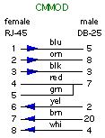
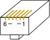

|
Cisco normally implements three levels of Reverse-TCP connections
for remotely connecting to their ports;
- 2000+line number for the normal (7-bit) Telnet-like session
- 4000+line number for an 8-bit-escapable session
- 6000+line number for an 8-bit non-escapable session
The TCP-200n range mimics the normal Telnet session, passing
7-bit data normally. This is typically what you will use if you
are connecting remotely to device consoles for remote control.
The TCP-400n range is used if you need to pass 8-bit data,
but you still need to be able to define an Escape character so
that you can drop the session when you are ready. You would use
this when your sessions use PC-type graphics characters (the
128-254 (decimal) character set used on Western keyboards).
The TCP-600n range is reserved for sessions where you need a
complete 8-bit binary path over the serial connection. You would
require this if you need to use the console to transfer files
using a binary protocol such as XMODEM. The disadvantage to this
range is that you lose control of the session once you start it,
and the device you are connecting to must then use hardware
handshaking to signal the Cisco to disconenct the session.
- Because you need EVERY byte in the data path, you can't
reserve an in-band character to invoke your escape from
the connection.
- The serially-connected device you are communicating with
will need to toggle the state of its DTR output (so that
the Cisco sees the change on its DSR input...so you need
to invoke Modem Control).
- If you cannot get the remote device to send the signal,
your only other option is to clear the line from
the Cisco console, at the Enabled prompt.
|
Because of the symmetrical wiring schema used by Cisco for their RJ-45 consoles,
the best way to make a null-modem connection between two Cisco-schema RJ-45
consoles is to use a CAB-500 'rolled' 8-wire cable (see the diagram below). Note
that a Crossover Ethernet cable will NOT work. If you don't understand why, follow
the wires, and you'll see how the signals get misconnected...

APACN part:
24490-21
|
APACN part:
24490-22
|
|
Standard Ethernet cables follow a specific wiring pattern. However, not ALL
Ethernet cables have 8 wires in the cable, since a standard basic Ethernet interface
only uses 4 of the wires. For console connections, you need to make sure that your
cables have all 8 wires, either 'straight through' (as shown to the left) for
most connections, or 'rolled' (as shown in the center). The USOC cable used for
CDDI connections will also work as a 'rolled' cable, if you have them in the
appropriate lengths.
|
|
If you need to connect devices over a longer distance
than your CAB-500, you can use standard 8-wire 'straight through'
(Ethernet) cables and a pair of Cisco-schema DB adapters to make the
null-modem signal transition.
The four charts below show you how to use adapters to
make a Null Modem, using standard Ethernet cables to provide the
appropriate lengths. Always match vendor-compatible parts when you are
making null-modem connections! That is, always connect a Cisco-schema
adapter to another Cisco-schema adapter, MOD-TAP with MOD-TAP, etc., to
ensure that the wiring is correct from one end to the other. Your
connection will not work (or, if it works, it will likely not work
completely) if you mix adapters with different wiring schema.)
|
Essentially, make sure that you are using a pair of adapters which;
|

|
Cisco Adapter combinations
|
Version
|
A-side
|
B-side
|
|
1
|
CMDCE
|
CFDTE
|
|
2
|
CMDTE
|
CFDCE
|
|
Micro-Annex Adapter combinations
|
Version
|
A-side
|
B-side
|
|
1
|
AMDCE
|
AFDTE
|
|
2
|
AMDTE
|
AFDCE
|
|
Xyplex Adapter combinations
|
Version
|
A-side
|
B-side
|
|
1
|
XMDCE
|
XFDTE
|
|
2
|
XMDTE
|
XFDCE
|
|
IOLAN Adapter combinations
|
Version
|
A-side
|
B-side
|
|
1
|
IMDCE
|
IFDTE
|
|
2
|
IMDTE
|
IFDCE
|
|
|
|

To connect most Cisco console ports to another Cisco console port, use a
'rolled' (8-wire) cable.
Due to the nature of Cisco acquiring other companies, there are some devices
with a Cisco brand that use the Cisco RJ-45 wiring schema, but they do NOT use
all of the signals. That is, they may only use the Data leads, or they may not
use Hardware Handshaking. However, if they have converted to the RJ-45 connector,
they have also used the legacy wiring schema. I'm still on the lookout, in case
there is a Cisco product from an acquisition that uses the previous companies
RJ-45 pinouts.
In order to make it easier to connect various devices to Cisco console ports,
or to Cisco-schema patch panels, I've created my Cisco
Host-to-Adapters Page, which lists the various devices on which I've checked
the serial interfaces. There are more than 500 devices in my connectivity
database, and the adapter pages list the devices, and tells you which adapter (or
cable) you will need to connect each device to either a Cisco console port, or
to a patch panel.
There are a few Cisco devices that have RJ-45 consoles that are wired the
null-modem opposite from the Cisco wiring standard. The three devices listed
below were (I believe) Catalyst products. They are also listed on the
Cisco Host-to-Adapters Page, with information
about which cable to use. (The RJ-45 wiring used on the console on these devices
appears to be a patch panel, and not a console port.)
- 1100 switches
- 1200 switches
- 1400 switches
Cisco also sells an 8-cable "Hydra" interface (Cisco part 72-0845-01)
from the 68-pin high-density connector to male RJ-45 connectors, having 3-foot
long leads. These can be used with the 68-pin connectors on the Cisco 2500-series
terminal servers, as well as the NM-16A and NM-32A async serial Network Modules.
These cables have the same pinouts as an Ethernet cable plugged into the
Cisco Patch Panel.
BEWARE: The Hydra cable will not work directly with
the 'different' devices listed above, because the consoles on those devices are
wired the 'null-modem' opposite from the regular Cisco RJ-45 console schema.
The Hydra cable was designed to connect to the normal console ports.
The Cisco-schema patch panel from APACN are wired the
null-modem opposite from theCisco console ports, so that a Cisco RJ-45 console
port can attach directly to a Cisco patch panel using an
Ethernet (8-wire, straight-through) cable.
|
|
You can connect a modem to almost any Cisco device. (Your modem configuration
may be affected by the signals available on the Cisco device, i.e. flow control
and hardware handshaking.) Attach the CMMOD adapter to the
female DB-25 connector on most modems, and use an appropriate length of Ethernet
cable (and another adapter on the host-side, as needed), as indicated in the
illustrations below.
Whether you attach your modem to the Console, or to the Aux port will need to
be reflected in your line configurations. (Do you want to enforce a local login
(with a crypt password, stored on the Cisco device), or use a stronger,
centralized authentication service (such as RADIUS or TACACS+)? Your line
configuration will probably need to include the "line in/out modem" parameter.
You also need to configure whether you will need to enable the modem connection
for a "protocol" session, such as PPP, which may need an 8-bit clean data path.
(In the last case, your modem DCD signal needs to be able to tell the Cisco port
when the modem is on-line, so it's more important to get the physical connection
right, so that the Cisco port will log the user/session off when the modem
connection is lost or dropped.)
This section is, unfortunately, a bit vague, due to a
few problems.
- The variety of connectors used on console ports on
Cisco gear, mainly due to the acquisitions of other companies by Cisco.
- Some consoles may not care if DSR is
toggled, but that's how the modem will signal whether a call is on the
line, in the configurations shown below (since the Cisco RJ-45 schema
doesn't have a separate DCD wire).
- Settings for the various devices to talk to the modem;
- Some consoles may need to be
configured to understand that there is a modem on the console
- You should probably put an IDLE timeout
(exec-timeout) on these console (or aux) ports, to hang-up after a period
of inactivity, since these are your consoles!
- While you *may* be able to configure some
ports to allow SLIP or PPP, you probably don't want that in most
instances. You may need to invoke certain commands to prevent that
possibility on some devices.
- The modem settings required to make whichever
modem you choose work.
- I like the USR/3-Com Courier modems
if you are connecting to these ports so you can dial into them.
(Personally, I avoid the USR Sportster for dial-in use, because I cannot
lock-down certain settings!)
- You may need to modify the settings so that
DCD reflects the state of the phone connection, since the MMOD connector
ties the DSR pin of the adapter to the DCD signal of the modem.
As a result, configuration of the Cisco line and
interfaces, for the most part, are left as an exercise for the reader.
Sorry! If you have some specific questions, I'm willing to field them via
email, but have your modem manual handy.
Defining what you need the modem connection to do (and deciding what it
shouldn't do, and what it doesn't need to do) should be your first step, then
head for the Cisco configuration command reference for your version of IOS.
Here are some guidelines for configuring the modems;
- Determine the highest reliable RS-232 speed, common to the Cisco device and
the modem...
- Set the modem port speed to that high speed
- Do NOT let the modem "auto-detect" the connection speed, or change
the RS-232 port speed!
- Set the connection for hardware flow control on the modem and the Cisco port.
- Ensure that your cables and adapters are wired correctly for flow control.
- I normally turn software flow control off...
- Configure the modem so that the DSR and DCD line reflect the 'on-line' status
- Determine the optimum modem config string, and save that to NVRAM on the modem.
- Teach the modem to auto-load that config when the modem resets.
- Teach the modem to reset when the call is disconnected, or DTR is cycled.
- Teach the Cisco how to also send that config string, if needed.
Devices with a Cisco RJ-45(f) console port can be connected using an
Ethernet Cable to the CMMOD
adapter and modem. (You would use a USOC-rolled cable to connect the CMMOD to a
Cisco-wired patch panel.)
Devices with a DB-9(f) console port can be connected using an appropriate
DB-9 adapter and an Ethernet Cable. You can refer to my
Minor Scroll of Console
Knowledge for tips on how to make sure you are using the appropriate adapter.
Devices with a DB-25(m) console port can be connected using an appropriate
DB-25(f) adapter and an Ethernet Cable. (Most Cisco devices which have a DB-25(m)
console will also have a DB-25(f) Aux or Modem port, which you can also use.)
Finally, realize that the physical connection will be an important starting
point. Get the connection set first, including speed settings, before you go
much further with your testing. Flow control will likely be your biggest hurdle,
since the modem can introduce data latency issues because of speed differences
on the telco link, as well as the serial conenctions to the modems on each end of
the link, as seen in the next illustration.
If you want to use any compression between the modems, you need to set the
serial speed to at least 2x, and preferably 4x (or more) faster than the modem
link speed. At 2x, the compression will not give you much advantage, because
the modems need time to compress and decompress the data. Using 4x or more will
show you some data throughput improvement. But, the higher your serial speed,
the more likely you will have flow control issues between the modems. And, if
you have a high serial speed trying to send to a slower serial speed, you may
find that you are filling buffers in the mode, and possibly at the slower
serial link. If flow control isn's set up properly, you will see data loss.
In summary; using modems in a data link will be a challenge, and maybe even
a pain. You will save yourself some grief by spending a bit more, and getting
really good modems, from a manufacturer with a good support staff. You should
also try to download the manual for the candidate modems from the manufacturers
website, and see if you can understand the configuration information about flow
control, serial and phone speed controls, and compression. If you can't understand
the manual, try looking at other manufacturers.
|
|
When you have a device with a non-Cisco RJ-45 console port, you will either
need to use a combination of a Cisco adapter (connected to the Cisco device),
and another non-Cisco adapter (connected to the non-Cisco device) to create
the interface between the two wiring schemes, buy you will need to buy or make
a special cable. The common choices for these connections
are usually DB-25 RS-232 adapters, so you can easily check your work by
connecting a passive RS-232 signal tracer,
or a breakout box, in between the adapters.

The table below documents such connections, using Ethernet cable (8-wire,
straight-through) cables between the patch panel, the devices and the adapters.
The keys to making this type of connection work are;
- Have the proper RJ-45 wiring schema, connected to each device
- (attach the Cisco-schema adapter to the Cisco device)
- (attach an adapter to the 'other' device which is wired for the
appropriate RJ-45 schema)
- The adapters must have complimentary DB connectors
- (the same number of pins; one male, one female)
- (it doesn't matter end which is which gender)
- One adapter must be DTE, and the other must be DCE
- (If both adapters are DTE, or both are DCE, the connection will
not work)
- Use your passive signal tracer to make sure that the signals are correct
You can find more tips on my Minor Scroll of
Console Knowledge page.
|
Non-Cisco device
|
Device-side adapter
|
Cisco-side adapter
|
|
Micro-Annex (preferred)
Micro-Annex (alternate)
|
IMDCE, or MOD-TAP 06-988-401-00
IMDTE, or MOD-TAP 06-988-262-20
|
CMDTE
CMDCE
|
|
|
Tips for configuring the serial ports on terminal servers for remote access
to attached serial devices. (This is the type of configuration that could be
used with Conserver, or to
allow someone to use a TCP session to a high-TCP port to the Cisco device,
for connecting across the network to a specific serial port on the Cisco device.)
- Choose which line(s) will be used for connecting to serial devices.
- Don't run an 'exec' session on the port(s)
- (if you do, the Cisco login may 'chat' with the attached devices
login session...)
- (output data from the attached devices would be perceived as
attempts to log in...)
- Don't set the port(s) for local login.
- (this will cause the Cisco port to issue a login when it sees the
connection. The login will time out, and disconnect the TCP session.
Conserver will reinitialize the connection, but this will fill your
Conserver logs...)
- Set the port to allow Reverse Telnet.
- Set the port speed, data bits, parity, and stop-bits (most folks use 9600-8-N-1)
- (there are arguments for setting the port speeds higher.)
- (make sure that the Cisco port speed matches the attached devices
port speed.)
- Decide if you want/need software or hardware flow control.
You can use the example below to get started.
line 1 16 (set individual lines, or 'line ranges'...)
no exec
no login local (local login will fill your logs...)
transport input telnet
speed 57600 (pick your speed(s)...)
databits 8
parity none
stopbits 1
flow control none (choices are [none|software|hardware])
If you are connecting these Console Server ports to the serial consoles of
your network equipment, remember to consider these other points;
- Set an idle timeout on the console exec of the network gear (on the
attached devices, not on the terminal server!)
- You probably don't want someone to leave a port in the enabled mode,
and then let another user to connect to the port after them to have the
enabled access!
- Add a password (or other authentication) to the ports of your attached
devices (just like you would do for read-only access via telnet.)
Configuring the AUX
port for Reverse-TCP
Normally, the AUX port of a device can be configured with commands similar
to those shown above, to respond to reverse-TCP connections. The Aux port has
typically been assigned as the highest async line in the device, but some AUX
ports may not respond to configuration for reverse-TCP. (For example, configure
line aux 0 as described above, to be
able to enable reverse-TCP to the Aux port.)
Note: You can NOT set a Cisco console
to respond to reverse-TCP. You can set
line con 0
for any of the settings above
except the transport input telnet, which is the bit that enables
reverse-TCP.
On a system that uses NM-nnA async modules, presume that
all of the NM slots will have 32-port modules installed, and total the
number of ports, and then add one to access the Aux port. (In a C3620,
you could have two NM-32A modules, for a total of 64 ports, so the Aux
port would be the 129th port, and you would reverse-TCP to port 2129 to
reach it, if it has been configurd for transport input telnet. In a
fully-loaded 3660, the Aux port would be port 2225.)
On the 2800 and 3800 devices, it seems that the Aux port was
assigned as line 1 (reverse-TCP to port 2001), and then all of the
other async ports have line numbers assigned by which slot/port/hwic where
they are installed. (See the 3800 Config sestion for more info about
line to slot/port mapping.)
This doesn't match the Cisco legacy, and Cisco folks are looking to see
if they can change this in software to match the legacy mentioned here.
It may be hard-coded in hardware. I don't know when/if it will match
the legacy model in the future. For now, I can only tell you to test
one of the lines you have installed, and see which cable responds for you.
|
|
When using the 2600 and 3600 family devices for remote access to attached
serial consoles, there are a few things you need to consider. Foremost (in my
opinion) is that the "line numbers" (also async interface numbers) are hard-coded
to the slots of the chassis. This means that wherever you put your async
interface module will determine which line numbers will correspond to those
async serial ports.
Here's the way the async line numbers are assigned;
Slot 0: lines 1-32
Slot 1: lines 33-64
Slot 2: lines 65-96
Slot 3: lines 97-128
Slot 4: lines 129-160
Slot 5: lines 161-192
Slot 6: lines 193-224
So, my recommendation is to put the network interface module(s) in the
highest-numbered slot(s) when you can, and start loading your NM-xxA cards
starting in Slot 0, working your way up consecutively.
The slot numbers are stamped in the sheet metal that makes up the rear of
the chassis, but sometimes the stamping was a bit hard to see. The diagrams
showing the slot numbers of the C3620 and C3640 are shown below (looking at
the rear of the chassis).
|
Here's the way the c3620 line numbers are assigned;
Slot 0: lines 1-32
Slot 1: lines 33-64 (or network I/O...)
|
|
|
Here's the way the c3640 line numbers are assigned
Slot 0: lines 1-32
Slot 1: lines 33-64
Slot 2: lines 65-96
Slot 3: lines 97-128 (or network I/O...)
|
|
The next issue to consider: the line numbers are assigned in blocks of 32,
but you can also use the NM-16A (with only 16 async ports) in any of the
slots. However, the port numbers will then have gaps in them. (The line numbers
won't shift, due to the smaller number of ports on an NM-16A, to give you a
contiguous range.) This is something to be aware of as you are determining which
TCP port to call for remote access.
Here's the way the async line would be assigned for NM-16A modules;
Slot 0: lines 1-16
Slot 1: lines 33-48
Slot 2: lines 65-80
Slot 3: lines 97-112
Slot 4: lines 129-146
Slot 5: lines 161-176
Slot 6: lines 193-208
Finally, a pet peeve of mine: The designers of the c26xx product family, and
the C3660 product, assigned the built-in network interfaces as "Slot 0". From
a human-user interface standpoint, I think this was a bad move for two reasons;
1.) Since the 3620 and 3640 start the slot numbers on the lower-right
(as you look at the slots on the back panel), then the lower-left, and then
the next row up (first the right, then the left), until you run out of slots.
In the case of the C3660, with six slots, I'd presume that these were slots
0-5, and Slot 6 was the built-in (since it's located at the top).
|
Here's the way the c3660 line number are assigned;
Slot 0: Network I/O
Slot 1: lines 33-64
Slot 2: lines 65-96
Slot 3: lines 97-128
Slot 4: lines 129-160
Slot 5: lines 161-192
Slot 6: lines 193-224
|
|
What this design decision means is that, in the largest 3600 chassis
(the 3660), which you would buy as a 192-port terminal server, that you can
never assign lines 1-32. This only becomes a functional issue when humans
need to map the 'first' serial port to TCP port 2033, instead of 2001.
(Anyone interfacing with these 192 ports needs to keep this 32-port shift in
mind, on every interaction.) Fortunately, if you are using
Conserver to manage these ports, you
only need to worry about this shift once, as you are adding these devices
into the configuration file.
2.) In the case of the c2600 family, I'd have put the NM slot on the right
(as you are looking at the rear of the unit), in the 'slot 0' position, and
put the built-in interfaces on the left.
|
Here's the way the C26xx line numbers are assigned;
Slot 0: Network I/O
Slot 1: lines 33-64
|
|
|
|
When using the 1800, 2800, and 3800 family devices for remote
access to attached serial consoles, there are a few things you need to
consider. Foremost (in my opinion) is that the "line numbers" (also
async interface numbers) are hard-coded to the HWIC slots of the chassis.
This means that whichever HWIC port you use for your HWIC async
interface module will determine which line numbers will correspond to
those async serial ports.
Async line number 1 is reserved for the
AUX port, and the line numbers for
the HWIC ports are shifted up accordingly. This is not consistant with Cisco
legacy, where the AUX port is the highest line in the chassis. I found this
curiosity in July of 2006. After I reported this, Cisco was looking for a way
to make the 3800 conform to the legacy sequence. (Testing in September with
the 2800 series found that they also have this anomaly, and there is no word
from Cisco whether this was a hardware mapping, or if they will change the
behavior in a future version of IOS to match the legacy style.)
Here's the way the async line numbers are assigned;
* Even if you only use HWIC-8A modules, there is still the modulo-16
offset!
Slot |
HWIC-8A
lines |
HWIC-8A
TCP ports |
HWIC-16A
lines |
HWIC-16A
TCP ports |
0/0 |
0-7* |
2002-2009* |
0-15 |
2002-2017 |
| 0/1 |
16-23* |
2018-2025* |
16-31 |
2018-2033 |
| 0/2 |
32-39* |
2034-2041* |
32-47 |
2034-2049 |
| 0/3 |
48-55* |
2050-2057* |
48-63 |
2050-2065 |
| 1/0 |
64-71* |
2066-2073* |
64-79 |
2066-2081 |
| 1/1 |
80-87* |
2082-2089* |
80-95 |
2082-2097 |
| 1/2 |
96-13* |
2098-2105* |
96-111 |
2098-2113 |
| 1/3 |
112-119* |
2114-2121* |
112-127 |
2114-2129 |
TCP port 2000 should be the chassis itself, and TCP 2001 will be the AUX
port, if you have configured it for reverse-TCP.
So, my recommendation is to put non-async module(s) in the highest-numbered
slot(s) when you can, and start loading your HWIC-xxA cards starting in
Slot 0/0, working your way up consecutively. In my experience, it's more
intuitive to have the async modules in a sequential order. That said, I also
recommend loading HWIC-16A cards instead of HWIC-8A cards if you're going to
load more than one card, so you have sequential line numbers. (For one thing,
sequential numbers make it easier to script configuration settings.)
|
Here's the way the c2800 line numbers are assigned;
Slot 0: lines 0-63
Slot 1: lines 64-127
|
|
|
Here's the way the c3800 line numbers are assigned;
Slot 0: lines 0-63
Slot 1: lines 64-127
Slot 2: lines 128-223
Slot 3: lines 224-195
|
|
|
Here's the way the HWIC interfaces are assigned;
interface Slot/HWIC/lines (0-7 or 0-15)
Interface 0/0/0 0/0/15
|
|
|
|
When using the 1900, 2900 ISR family devices for remote access to attached
serial consoles, there are a few things you need to consider. As with the
2800 and 3800 devices the "line numbers" (also async interface numbers) are
hard-coded to the HWIC slots of the chassis. This means that whichever HWIC
port you use for your HWIC async interface module will determine which line
numbers will correspond to those async serial ports. BUT, they are not quite
the same port numbers as with the 2800 and 3800 families!
Async line number 1 is reserved for the AUX
port, and Async line number 2 is reserved for a built-in
MODEM. Then the line numbers for
the HWIC ports are shited up accordingly.
Here's the way the async line numbers are assigned;
* Even if you only use HWIC-8A modules, there is still the modulo-16
offset!
Slot |
HWIC-8A
lines |
HWIC-8A
TCP ports |
HWIC-16A
lines |
HWIC-16A
TCP ports |
0/0/ |
0-7* |
2003-2010* |
0-15 |
2003-2018 |
| 0/1/ |
16-23* |
2019-2026* |
16-31 |
2019-2034 |
TCP port 2000 should be the chassis itself, and TCP 2001 will be the AUX
port, if you have configured it for reverse-TCP.
So, my recommendation is to put non-async module(s) in the highest-numbered
slot(s) when you can, and start loading your HWIC-xxA cards starting in
Slot 0/0, working your way up consecutively. In my experience, it's more
intuitive to have the async modules in a sequential order. That said, I also
recommend loading HWIC-16A cards instead of HWIC-8A cards if you're going to
load more than one card, so you have sequential line numbers. (For one thing,
sequential numbers make it easier to script configuration settings.)
|
|
The Cisco 2509-11 Terminal Servers included async ports,
delivered using 68-pin (SCSI-II) connectors to deliver 8 Async Line
interfaces on each connector. (The C2511-RJ model had 16 RJ-45 jacks on
the back panel, instead of the two 68-pin connectors.)
The Cisco 2600 and 3600
series Access Devices can use an Async Interface module
(NM-16A, or NM-32A) which also uses the 68-pin connectors.
The Cisco 1800, 2800, and
2800 series Access Devices use an HWIC Async Interface
module, and these use a different connector to deliver 8 Async Line
interfaces. These patch panels described below will NOT work with the
HWIC async modules!
If your equipment is close to your Terminal/Console
Server devices, you could use the "Hydra" cable (Cisco part 72-0845-01),
but those cables are only 3 feet long. If you want to connect to
devices farther away, you can connect these with Cisco-schema patch
panel options from APA
Cables & Networks.
Option #1 is a single rack-unit-high
patch panel, with 16 ports, and two (2) 1-meter-long cables, with the
68-pin connectors. Be aware that these are slightly larger than 1-Rack
Unit tall, which will affect rack mount spacing.
- 1) One 16-port Patch Panel for each 2509-11 device
(APACN part number 19309-01).
You can use two of these patch panels for each NM-32A module.
Option #2 is a combination of a
2-Rack Unit-tall, 48-port patch panel, having six (6) AMP 50-pin
telco-type connectors with 1'-long cables. (Each AMP connector serves 8
RJ-45 connectors on the patch panel). You will also need an appropriate
number of adapter cables with 68-pin (SCSI-II connectors) on one end,
and the 50-pin AMP connectors on the other end.
- 48-port patch panel (APACN part number 19309-03, $475.00 USD
each)
- 8-port 68-pin SCSI-II connector to 50-pin AMP
(telco) connector (APACN part number 19309-02,
$90 USD each), and you need one of these cable assemblies for
every 8-port async connector.
The port density with Option #2 is much better for
high-density applications, where you want a lot of ports close to each
other. I've seen these deployed in instances where the (usually) C3640
or c3660 are deployed, and the patch panels are mounted close to the
C3600, and then Ethernet cables are used to connect the patch panel
connectors to "infrastructure cabling" patch panels, in order to
connect to devices in other racks in the data center. (A second option
is to put the patch panel in the rack near all of the devices where you
need console connections, and use longer Telco-type extension cables to
connect the patch panels to the Cisco 3600 device in another rack.
However, there are few instances that I've seen where you need 48
console ports in a single rack.)
Useful Extras: The threaded nuts that
retain the serial cable harnesses on the Cisco 2509-2511 communications
servers, and the async modules for the 3600 series devices, is a wider
diameter than the screws on the APACN cable harnesses themselves (so
the screws on the harness cables cannot be tightened to the 68-pin
connector on the C25xx or NM-xxA). You can get the proper threaded
standoffs from APA Cables & Networks (www.apacn.com) by
asking for part number 25057
("AMP female screw-lock kit", only two pieces/bag), for about $2.50
(USD) per bag(!). You will need one bag per connector, so you will need
two bags per 2509-11, and 4 bags for each NM-32A module.
You can reach APA
Cables & Networks at (voice) 800-422-2537 x-762 or
(fax) 763-475-8457. Steve Vacik ('svacik' at apacn.com) has been
helpful in the past. (I received notice in late DEC 2007 that APACN is
changing thei name. I'll update this contact information once I can
find out that they are still going to support serial console stuff)
Option #3 is a product from Great
Lakes Wire & Cable, (Kevin Reber, 888-833-4592,
sales@greatwire.com). They have a 1 rack-unit panel with (16) DB25 connectors, and
another 1 rack-unit panel with (32)
RJ45 connectors. They have cables from the patch panels to
either the Cisco NM async interface, or to the HWIC interface. You can
also specify DTE or DCE interfaces (by choosing the appropriate
interface cable) which offeres some interesting flexibility.
|
20091S-XXX DCE cable for NM
20091-XXX DTE cable for NM
|
20421-XXX DCE cable for HWIC
20413-XXX DTE cable for HWIC
|
|
|

|
When you are deploying console servers, you may
still want to have a way to wheel a terminal or a laptop up to a
machine to check configurations (basically, the practical (or paranoid)
among us want to have a safety net, in case the console services fail).
In this case, using modular adapters
actually simplifies our job!
By connecting all of your remote consoles to the
patch panels using Ethernet cables, all you need to do is connect an
adapter to your laptop, and set up a Terminal Emulator package to talk
to the serial port of the laptop.
If you want
to set up a "crash cart", I'd also suggest that you set the serial port
speed on all of your consoles to 9600 bps, 8-N-1 (since is the most
common setting). Having a common speed removes one more variable to
have to remember during a crisis.
If you have
any Sun workstations connected to your console
services, you should test to make sure that your terminal emulator
software doesn't send a serial BREAK when you start/stop it, since the BREAK
signal will likely send your Sun host to the OK prompt. (This has also been reported on
some SGI and NeXT hosts.)
The standard "terminal" adapter that Cisco
provides (APACN equiv. is CFDTE91),
when connected to your laptop, will give you an RJ-45, Cisco-schema
connection that is wired like a Cisco-wired patch panel port.
Use the APACN CFDCE91
adapter, connected to your laptop (and a terminal emulation program)
will give you an RJ-45, Cisco-schema connection that is wired like a
Cisco RJ-45 console port.
When you have successfully configured your
devices, you can then disconnect the Ethernet cable on the device that
you want to connect to, and use an Ethernet cable between the connector
on your PC and the other device. Your physical connection will be in
place, and you only need to ensure that your logical port settings on
the PC match those of the other device.
|
|
|
I've only had three reports of a Cisco NM-xxA interface
causing a Sun device to halt. In resolving two of the three cases, we
finally absolved the Cisco port, after the sites used a properly-wired
serial adapter. (The first site didn't involve me until they had
abandoned the Cisco solution, so they couldn't be sure, or show me the
parts they had used.) I'm still hopeful that I may one day get the
schematic of an adapter that causes such a scenario.
I am a strong proponent of buying pre-wired, pre-labeled
adapters and cables. Generally speaking, you probably can't build an
adapter cheaper, if you consider the value of your time as well as the
component costs. And, whether or not I can make 100 adapters without a
mistake isn't being questioned, I'm sure I'd rather not make 100 by
myself. The best advantages for buying pre-built adapters and pre-wired
cables include;
- Consistent wiring and labeling of the parts.
- Consistent shell colors and labels aides in
troubleshooting, by visually identifying the parts.
- Enhances reliability, knowing you can grab any
adapter and count on it being wired correctly.
- If you need a LOT of adapters or cables for a
build-out, you probably don't want to build them all yourself!
You can purchase any of the adapters and cables listed
on these pages individually (or in bulk) from APA Cables &
Networks (www.apacn.com).
You also have the option of buying a Cisco
Console Kit, which includes a complete set of adapters, and
some of the specialty cables
listed above, as well as a passive RS-232 Signal Tracer. The default
shell color is black for Cisco adapters. You can get the shells in
another color if you want, provided you want one of the colors listed
below:
Available colors: BK = black, GN
= green, RD = red, YL = yellow,
BL = blue, GY = grey
So, the APACN part number CFDTE91-GN
would denote the DB-9 female DTE adapter, wired for the Cisco RJ-45
format, but supplied with a green plastic shell (instead of the default
black shell).
APA Cables & Networks also sells adapters and
adapter kits for other RJ-45 schema, including the Annex/Bay/Nortel, IOLAN Rack+ and Xyplex terminal
server families. APA Cables & Networks uses different default
colors to make it easier to visually identify the different RJ-45
wiring schema.
The DB-25 adapters are wired according to the older
Cisco equivalents (from the CS-500 days). The DB-9 parts are derivative
works. The signaling for the Cisco RJ-45 consoles is shown at the beginning of this guide.
With all of this said, I also understand that sometimes
you just need to make that one cable or adapter, and buying just one
isn't practical. So, here are the schematics. (The APA Cables &
Networks part number is shown below each adapter. If there is a Cisco
equivalent, I've noted the Cisco part number as well.)
APACN p/n 24490-01
Cisco p/n 29-0809-01
|

APACN p/n 24490-02
Cisco p/n 29-0810-01
Logical p/n ADP-000006
|
APACN p/n 24490-03
Cisco p/n 29-0808-01
|
APACN p/n 24490-04
Cisco p/n 29-0811-01
Logical p/n ADP-000005
|
APACN p/n 24490-14
|
APACN p/n 24490-07
Cisco p/n 74-0495-01
Logical p/n ADP-000008
|
APACN p/n 24490-24
|
APACN p/n 24490-23
Logical p/n ADP-000007
|
APACN p/n 24490-60
|
APACN p/n 24490-59
Logical p/n ADP-000012
|
APACN p/n 24490-24
|
APACN p/n 24490-23
Logical p/n ADP-000011
|
|
|

APACN p/n 24490-05
Cisco p/n 29-0881-01
|
|
|
(The connection between pins 4 and 5 on these
adapters are very important, to tell some of the Cisco serial
interfaces that the port should be in RS-232 mode!)
|
|
As with adapters, I recommend buying pre-built, pre-labeled, tested cables.
APA Cables and Networks sells specialty cables for connecting Cisco consoles
and patch panel ports to other console servers and devices, and these can be
ordered from the descriptions and part numbers shown below. The default length
is 7 feet, but you can order custom lengths as needed. The cables come with
black boots on the RJ-45 end, and labels denoting the Cisco end. The MMJ end
does not get a boot, since they can't find anyone who makes a colored MMJ boot.
APACN p/n 24490-71
|
APACN p/n
24490-74
|

APACN p/n 24490-72
|
APACN p/n 24490-69
|

APACN p/n 24490-48
|
APACN p/n
24490-75
|
APACN p/n 24490-52
|

APACN p/n 24490-47
|
There are other cables listed on the Cisco Adapter Kit Page.
|
|
U.S. Robotics (USR, now 3-Com) digital
modem chassis have a different pinouts than Cisco on the console ports
on their NICs and NACs.
You can accommodate these devices by combining a Cisco 29-0810-01
(CFDTE) adapter with a USR cable (part number
1.009.691-B) attached to the USR console port, and an Ethernet cable
to connect the CFDTE adapter to the Cisco port.

You can also make a single cable, with RJ-45 male connectors on each end.
Make sure that you label both ends of the cable, since the wiring is not
symmetrical (it makes a difference which end plugs into the Cisco port!)
APA Cables and Networks sells a couple of cables for this (black boot on
the Cisco end, orange boot on the USR end);
APACN p/n 24490
|
APACN p/n 24490-16
|
|
There are more cables listed on the Cisco Host-to-Adapters Page.
|
|
Sun Netra Hardware
Most Sun hardware has used a female DB-25 connector for the TTY A and B
ports. (Use a CMDCE adapter to connect to a Cisco
console port, or a CMDTE adapter to connect them to
a Cisco-wired patch panel.)
The Sun Netra T-1 (model 105) uses an RJ-45 console, and it happens to be
wired identically to the Cisco console port.
- To connect a Netra T-1 105 to a Cisco console port, use a
rolled cable.
- To connect a Netra T-1 105 to a Cisco patch panel, use an
Ethernet cable.
The DB-25 serial adapter that comes with the Sun Netra T-1 (Sun p/n
530-2889-02) is wired similarly to the APACN CMDCE adapter, with the
addition of adding a 'frame ground'. The plastic DB-25 shell has a metalized
coating, and a drain ground lead is attached from pin 1 of the DB-25(m)
connector to a lead attached to the metalized shell. The schematic on the
Sun p/n 530-2889-03 is similar, except they changed the colors of
the wires inside the shell (and the tabs which hold the DB-25 connector
are much more fragile, so take my word on the wiring inside!)
The Sun Netra T-3 disk arrays use an RJ-13 connector for it's
RS-232 console, and you only get data and ground for your connection (no
flow control or handshaking). APA Cables and Networks sells a couple of
cables for connecting these devices (black boot on the Cisco end, no boot
on the RJ-13 end);
|

|
APACN p/n 24490-62
|
APACN p/n 24490-63
|
|
There are more cables listed on the Cisco
Host-to-Adapters Page.
|
|
Digital Equipment Corp. (DEC, then Compaq,
then H.P.) equipment often used an RJ-13 with an offset locking tab, referred
to as a Modified Modular jack (MMJ). This included their VT-series
terminals, VAX equipment, and even newer Alpha series equipment.
APA Cables and Networks sells a couple of cables for this (black boot on
the Cisco end, and no boot on the DEC end);
 |
APACN p/n 24490 |
APACN p/n 24490-17 |
|
There are other cables listed on the Cisco Host-to-Adapters Page.
|
|
Cisco provides one female DB-9 to RJ-45 adapter (Cisco Part Number:
74-0495-01, labeled "terminal"), which is most often used to connect
PC serial (COM) port to the RJ-45 console of a Cisco device, using the CAB-500
(Cisco, rolled) cable. This adapter can also allow you to connect to other
DB-9 or DB-25 console ports on devices made by Cisco and other vendors.
The APA Cables and Networks equivalent
part number is 24490-07 (also called "
CFDTE91"). This adapter does not include wiring for
the DCD signal on the DB-9 connector (pin 1), which many PC-platforms expect
for their "console redirection" functions.
There are three other compatible DB-9 to Cisco-schema RJ-45 adapters available
from APA Cables and Networks
- female adapter, APACN part number: 24490-14
("CFDCE91").
- male adapter, APACN part number: 24490-23
("CMDTE91").
- male adapter, APACN part number: 24490-24
("CMDCE91").
Rather than list all of the connection possibilities on this page, I have
created my Cisco Host-to-Adapters Page, which
lists which adapter (or cable) you will need to connect any device on the
list to a Cisco console or aux port, or to a Cisco-schema patch panel port.
There are currently four additional DB-9 to Cisco-schema RJ-45 adapters
with DSR tied to DCD available from
APACN;
- female adapter, APACN part number: 24490-59
("CFDTE92").
- female adapter, APACN part number: 24490-60
("CFDCE92").
- male adapter, APACN part number: 24490-67
("CMDTE92").
- male adapter, APACN part number: 24490-66
("CMDCE92").
Note: Some Catalyst 1900-series switches use a DB-9 console
connection, instead of the RJ-45 connector. Some of these devices do
not like a connection between DB-9 pin 1 and pin 6, connecting DSR to
DCD on the DB-9, while other versions of the 1900 will require
this connection. (If the Cisco 1900 you have attached a DB-9 adapter to
is spewing AT modem commands out the port, you've got the wrong
adapter...add or remove the loop as needed.) The CFD*E91
does not have the DCD connection tied to DSR, while the CFD*E92
series does have the tie connecting DSR to DCD on the DB-9.
There was a previous APACN
part number: 24245-DTE-BK,
which was wired to tie DB-9 pins 1 and 6 together. However, the wire
was connected directly to pin 1, and then looped to pin 6. (If you
decided that you didn't need the DCD signal, and cut the loop, you
would still have DCD, but would have lost DSR...things may not behave
the way you might expect.)
APACN sells any of these adapters
(individual or bulk), as well as a complete
adapter/cable set.
|
|
Cisco provides either one or two DB-25 to RJ-45 adapters
with new equipment;
- one female adapter (Cisco Part Number: 29-0810-01,
commonly labeled "Terminal" or "CAB-500DTF"), which is most often used
to connect to male DB-25 AUX ports on many Cisco devices.
(APACN part
number: 24490-02 ("CFDTE"), previous part number:
24245"-DTE-BK)
- one male adapter (Cisco Part Number: 29-0881-01,
commonly labeled "MODEM" or CAB-500DCM"),
(APACN part
number: 24490-05 ("CMMOD"),
previous part number: 24238-DTE-BK;
MOD-TAP part number 06-888-E76-20.)
There are three other DB-25 to RJ-45 adapters that Cisco
used to provide;
- female adapter (old Cisco Part Number: 29-0809-01),
connect to male DB-25 AUX ports on many Cisco devices.
(APACN part number
24490-01
("CFDCE").
- male adapter (old Cisco Part Number: 29-0811-01),
APACN
part number: 24490-04
("CMDTE").
- male adapter (old Cisco Part Number: 29-0808-01),
APACN
part number: 24490-03
("CMDCE");
MOD-TAP part number 06-888-E76-20.
Rather than list all of the possibilities here, I have
created an Cisco
Host-to-Adapters Page, which lists the various combinations
of male and female, DTE/DCE, DB-9 and DB-25, with a list of the various
devices which fall under each connector type. The list also tells you
which adapter (or cable) you will need to connect each device to either
a Cisco console port, or to a Patch Panel.
APA Cables
and Networks sells any of these adapters (individual or
bulk), as well as a complete
adapter/cable set.
|
|
Some Cisco devices devices (mainly the ISR families) have been sporting a
USB console port, as well as the traditional, "legacy" RJ45 RS-232 console.
I posted a couple blog posts about these USB consoles, and the most relevant
is likely this one,
this
one, but there are a few details that I'll list here as well.
|
|
NOTICE: Most of the pages,
articles, and tutorials on this website are
copyrighted works. You may make 'deep links' to various
pages. (If you let me know which page(s) you are linking to,
I'll let you know if I move the page(s) during updates.)
Please send me email if you wish to republish any material,
or use it on your own website.
|
Copyright 1996-2014,
David K. Z.
Harris, N6UOW

Questions? Comments? Additions? Email consoles at conserver.com.
(Don't harvest my address, I don't want SPAM!)
How does he do it? And
Why?
If you liked my pages, please support my hacking, with a gift certificate from
Adafruit Industries, using the
email address above.
|